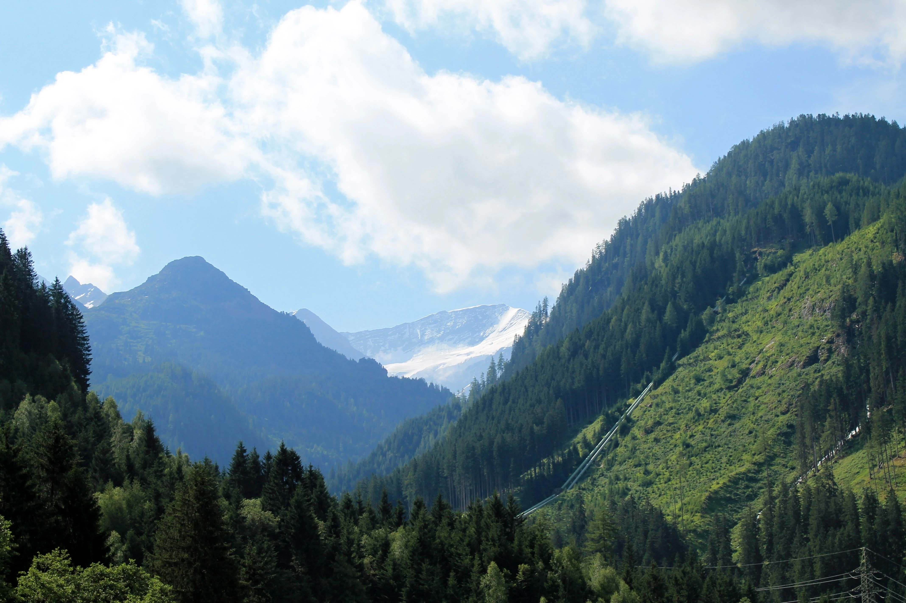
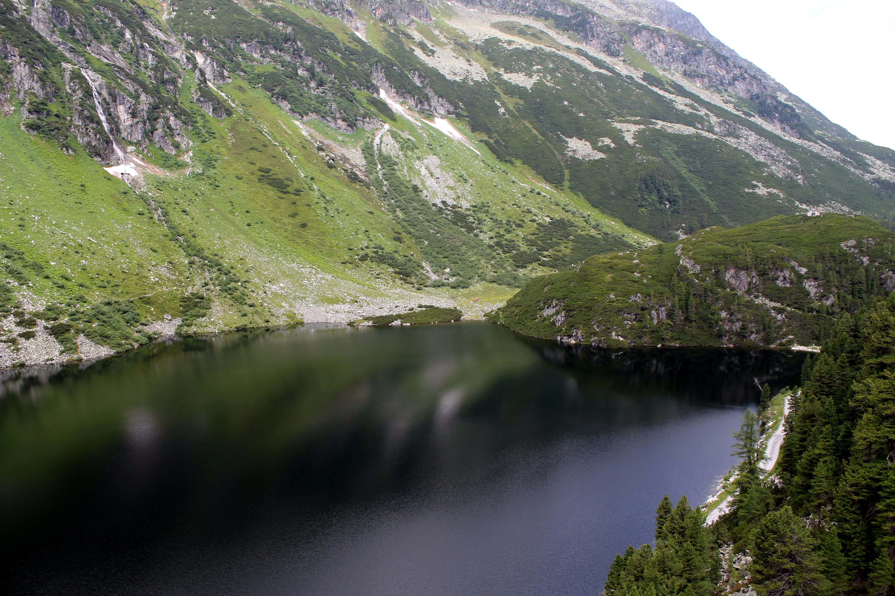
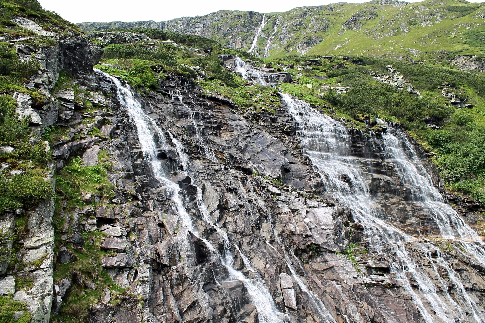
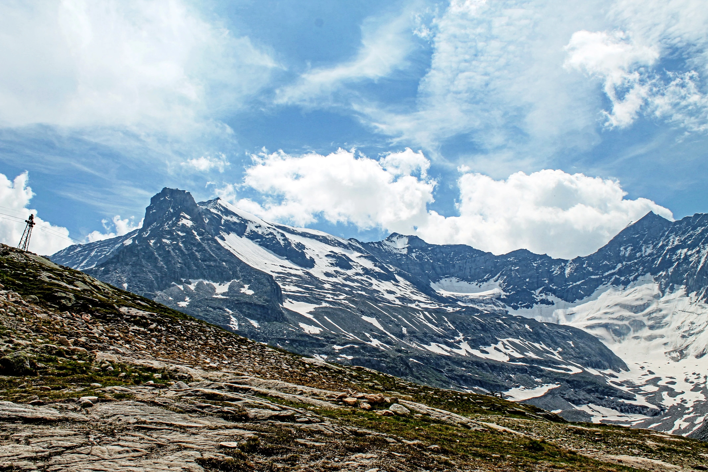
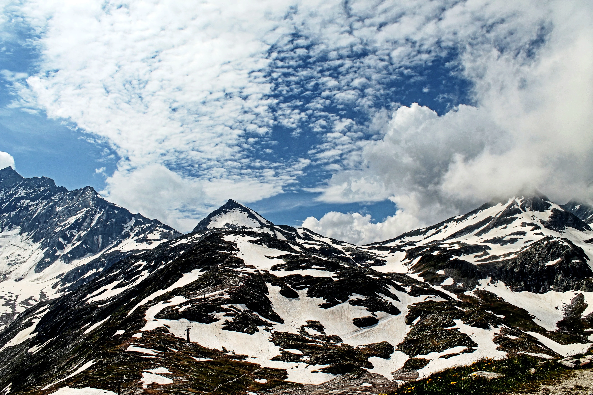
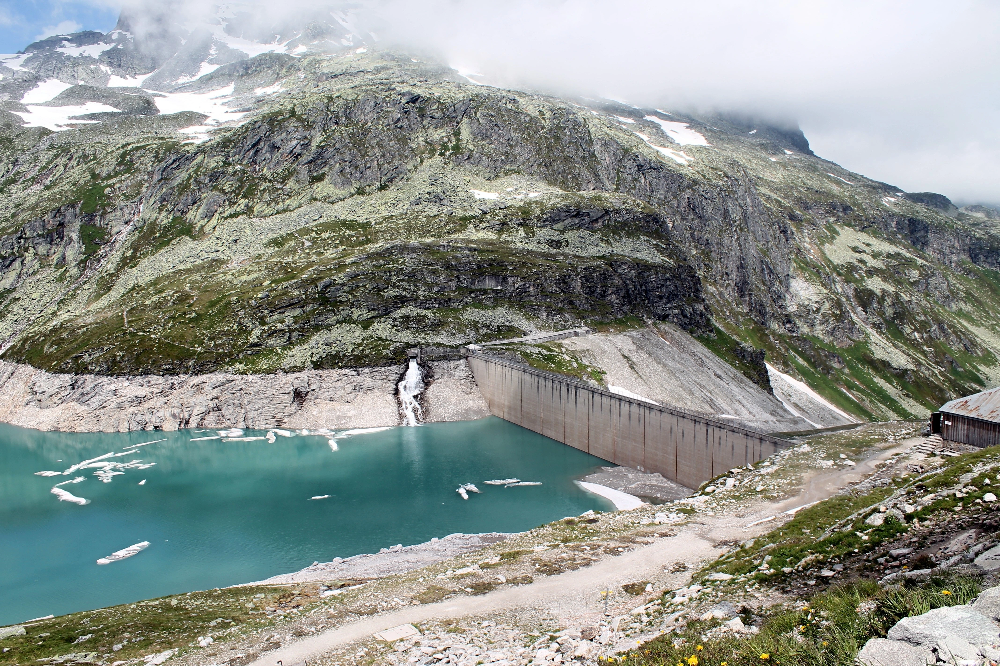
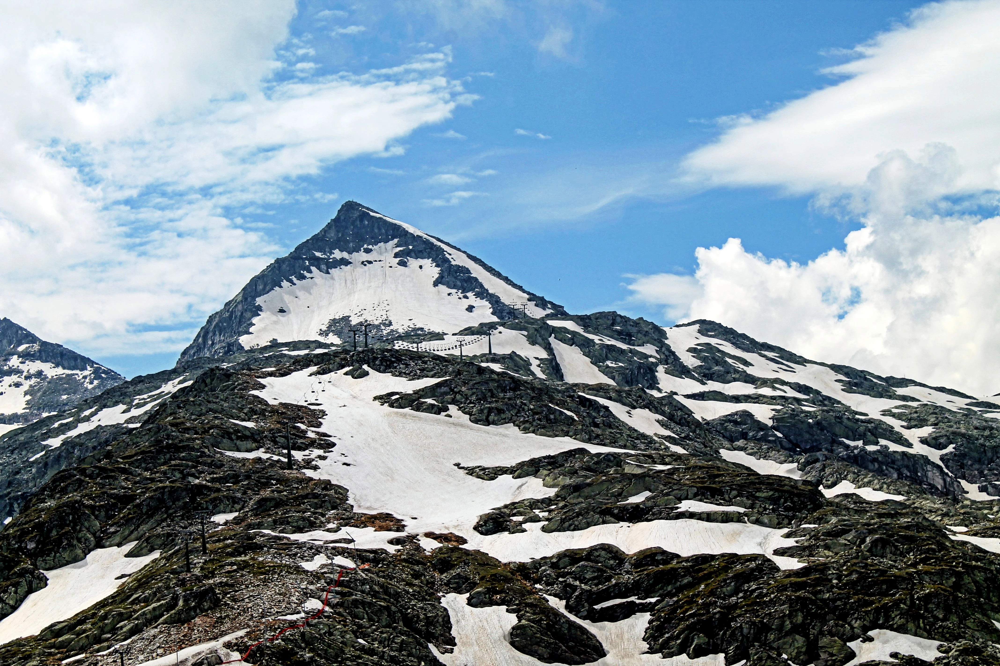
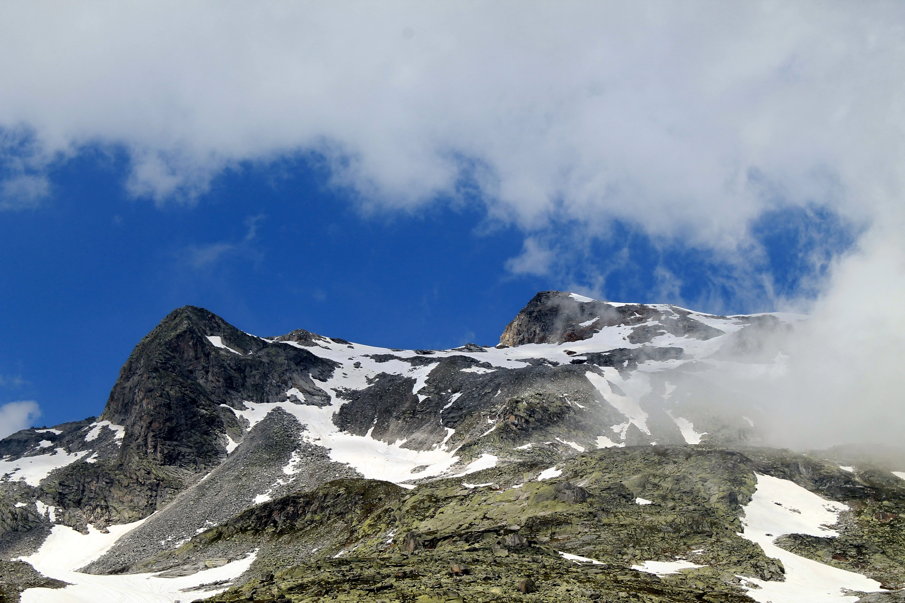
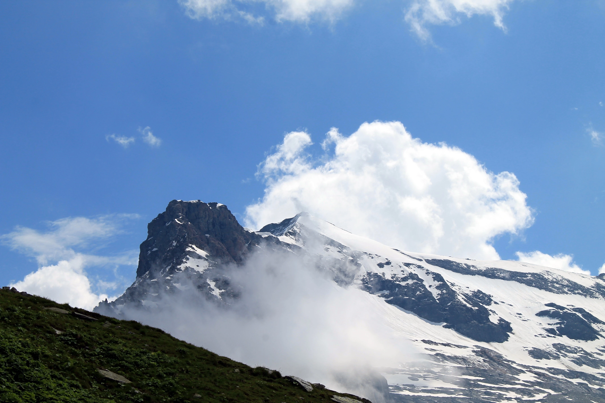
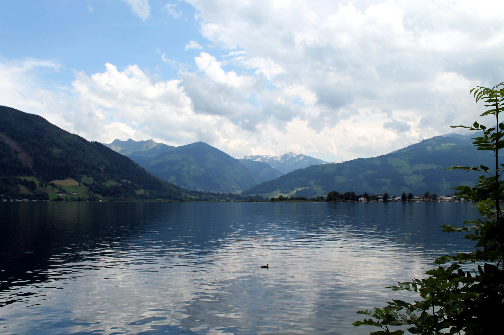

Ticho hor
Hory. Ticho, led, studený vítr. Ty a tvůj dech. Nic víc. Koukáš na hřebeny a vrcholy hor a přemýšlíš: Kdo vlastně jsem? Hlava se ztiší. Myšlenky zpomalí. A cítíš, jak jsi malý oproti těm horám. Jak se vztek smrskne a mysl ztichne. V horách a v tichu ztišíš svou mysl do úplného klidu. Srovnáš si myšlenky a uvědomíš si, kdo jsi. Jsi chlap, který jde mimo trasu. Chlap, který se rozhodl být silný a sebejistý. Chlap, který má hodnoty, kterým věří. Chlap, který si stojí za svými názory. Chlap, o kterého se můžou lidi opřít. Chlap, který jde svou vlastní cestou – a někdy není lehká, ale je MOJE. Věřím.
Dech. Pohled. Nic víc.










KLID NENÍ CÍL. JE TO ZVYK.